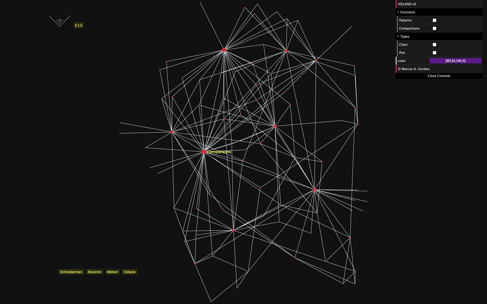
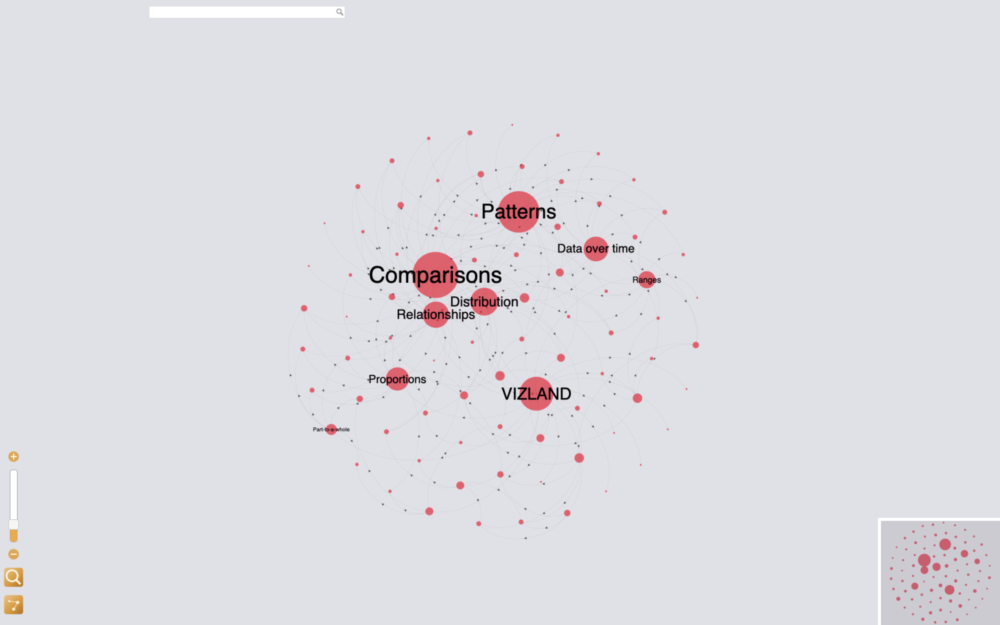
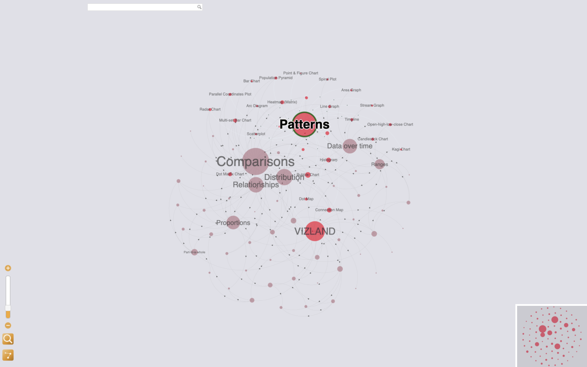
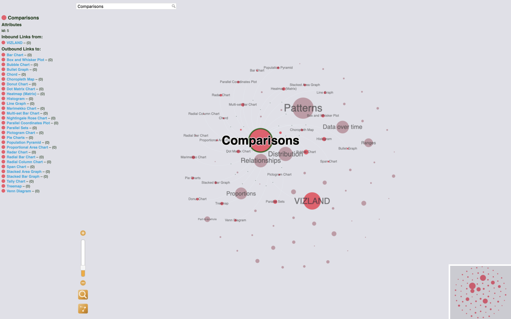

Visualization
VIZLAND
The Visualization Landscape
VIZLAND (the VisualIZation LANDscape): aspires to map a multitude of libraries that define data visualization types, their functions, their representational form, shapes, analytic capabilities, and descriptions, and making them queryable through a web interface.
The Visualization Project allows the exploration of 60 common data visualization types, their descriptions, and examples of use. The project is a web prototype that is to act as a learning tool and satisfy the need to query visualization types, more specifically, their functions, interactively.
This file documents the development and experimentation process behind the prototype. To be a learning tool in the OCAD University Visual Analytics Lab, it will experience further experimentation by graduate students and researchers in our quest for knowledge and analysis of data visualization methods.
The original information source used here was manually transcribed from the Data Visualisation Catalogue by Severino Ribecca.
   